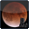

Vision nocturne
Pour conserver votre adaptation à l’obscurité vous pouvez passer en mode «vision nocturne» dans Lunar Eclipse Maestro.
|
Contrairement à l’utilisation d’utilitaires du type DarkAdapted, la vision nocturne reste activée même après que l’économiseur d’écran entre en action ou est stoppé.
En quittant Lunar Eclipse Maestro vous retournerez toujours au mode normal.